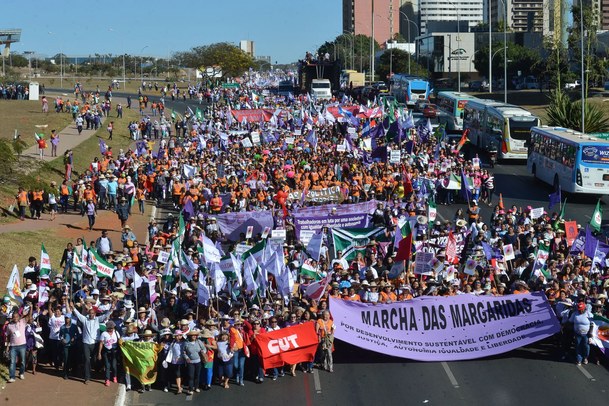

Lançado em 2020, reúne plantio de árvores, sistemas agroflorestais, recuperação ambiental e produção de alimentos saudáveis.

ERA DOS EXTREMOS • SOCIEDADE CIVIL
Movimentos
Movimentos
Socioambientais
Diferentes grupos se organizam para enfrentar conflitos relacionados à terra, território, água, energia e clima.
01 — CONTEXTO
02 — MOVIMENTOS
03 — ANÁLISE SOCIOLÓGICA
01 / CONTEXTO
Da denúncia à organização. Da organização à mudança.
Movimentos sociais são formas de ação coletiva nas quais grupos se organizam em torno de identidades, conflitos e reivindicações.
No campo socioambiental, essas mobilizações relacionam problemas ambientais a questões como território, produção, água, energia, direitos e clima.
01
IDENTIDADE
Quem somos?
02
CONFLITO
O que está em disputa?
03
AÇÃO COLETIVA
O que queremos transformar?
02 / MOVIMENTOS
Quatro movimentos. Quatro formas de mobilização.
As pautas são diferentes, mas todos transformam conflitos socioambientais em organização e ação coletiva.
01
TERRA • AGROECOLOGIA • MEIO AMBIENTE
MST
Movimento social do campo com atuação socioambiental.
+
MST
Movimento social do campo com atuação socioambiental.

O QUE É · ORIGEM
Movimento social do campo fundado em janeiro de 1984, no encontro de trabalhadores rurais em Cascavel (PR), com a reforma agrária como pauta central.
O QUE SIGNIFICA “SEM-TERRA”
Não significa simplesmente “pessoa sem casa”. Refere-se principalmente a trabalhadores e famílias rurais sem acesso à terra para morar, trabalhar e produzir, ou com acesso insuficiente.
CONFLITO SOCIAL
A concentração da propriedade rural e a dificuldade de acesso à terra, à moradia, ao crédito e às políticas públicas no campo.
COMO ATUA
Organiza ocupações e acampamentos, marchas, formação política, escolas, cooperativas e produção nos assentamentos.
PAUTAS E PRÁTICAS SOCIOAMBIENTAIS
TERRA E MEIO AMBIENTE
A questão ambiental aparece na disputa sobre como a terra é utilizada. Diferentes modelos de agricultura produzem impactos diferentes sobre o solo, a água, a biodiversidade e o clima.
Formação agroecológica e conservação de sementes ampliam alternativas ao uso intensivo de agrotóxicos. São experiências e metas do movimento, sem significar que toda produção ligada ao MST siga esse modelo.
02
TERRITÓRIO • POVOS
APIB + COIAB
Povos indígenas, território e direitos.
+
APIB + COIAB
Povos indígenas, território e direitos.

O QUE SÃO · ORIGEM
A COIAB articula povos da Amazônia desde 19 de abril de 1989. A APIB reúne organizações regionais de todo o país desde o ATL de 2005.
QUEM REPRESENTAM
Povos, comunidades, lideranças e organizações indígenas. A COIAB atua na Amazônia brasileira; a APIB faz a articulação nacional.
CONFLITO SOCIAL
Demora nas demarcações, invasões, garimpo, desmatamento e decisões tomadas sem consulta aos povos afetados.
COMO ATUAM
Realizam assembleias e mobilizações, formam lideranças, monitoram territórios e participam de ações políticas, jurídicas e internacionais.
PRINCIPAIS REIVINDICAÇÕES
RELAÇÃO COM O MEIO AMBIENTE
A integridade dos territórios sustenta modos de vida e ajuda a proteger florestas, rios, alimentos e diversidade biológica.
Realizado desde 2004, o ATL leva a Brasília pautas como demarcação, proteção dos territórios e participação indígena nas decisões públicas.
Fazer avançar demarcações e impedir a volta de invasores, garimpo e extração ilegal que ameaçam rios, florestas e comunidades.
03
ÁGUA • ENERGIA • DIREITOS
MAB
Barragens, território e populações atingidas.
+
MAB
Barragens, território e populações atingidas.

O QUE É · ORIGEM
Movimento nacional fundado no I Congresso dos Atingidos por Barragens, em março de 1991, após lutas regionais iniciadas nas décadas anteriores.
QUEM REPRESENTA
Moradores, agricultores, pescadores, povos e comunidades afetados ou ameaçados por construção, operação ou rompimento de barragens.
CONFLITO SOCIAL
Deslocamentos, perda de renda e território, riscos à vida e reparações definidas sem participação suficiente das populações atingidas.
COMO ATUA
Cria grupos de base, promove assembleias e protestos, acompanha reparações e pressiona empresas e governos por direitos e participação.
PRINCIPAIS REIVINDICAÇÕES
RELAÇÃO COM O MEIO AMBIENTE
Barragens podem modificar rios, pesca, paisagens e usos da água; esses impactos ambientais também alteram trabalho e vida comunitária.
A Política Nacional reconhece quem pode ser considerado atingido e estabelece direitos, formas de reparação e participação social.
Em 2026, o MAB apontava a regulamentação e a implementação efetiva da PNAB como tarefas ainda pendentes.
04
JUVENTUDE • CLIMA
Fridays for Future
Juventude, ciência e justiça climática.
+
Fridays for Future
Juventude, ciência e justiça climática.

O QUE É · ORIGEM
Rede climática global liderada por jovens. Começou em agosto de 2018, após a greve escolar iniciada por Greta Thunberg diante do Parlamento sueco.
QUEM REPRESENTA
Principalmente estudantes e jovens preocupados com o futuro, conectados a grupos locais independentes em diferentes países.
CONFLITO SOCIAL
A distância entre o alerta da ciência e a velocidade das decisões políticas para reduzir emissões e proteger os mais afetados.
COMO ATUA
Organiza greves escolares, atos públicos, campanhas digitais, pressão sobre governos e comunicação baseada em evidências científicas.
PRINCIPAIS REIVINDICAÇÕES
RELAÇÃO COM O MEIO AMBIENTE
O movimento liga a redução de emissões à proteção de ecossistemas e das pessoas mais expostas aos impactos da crise climática.
Em março de 2019, estudantes de diferentes países realizaram uma greve coordenada, tornando a juventude uma voz central no debate climático.
O relatório de 2025 do PNUMA concluiu que as políticas atuais ainda afastam o mundo da meta de limitar o aquecimento a 1,5 °C.
03 / POR QUE SÃO MOVIMENTOS SOCIAIS?
Da experiência comum à ação política.
Um problema coletivo não cria um movimento sozinho. Pessoas reconhecem interesses comuns, organizam-se e disputam mudanças.
É o sentimento de “nós”: experiências, símbolos e objetivos compartilhados que unem pessoas diferentes.
MST: identidade Sem Terra · FFF: juventude pelo climaSurge quando grupos têm interesses ou direitos em disputa e não encontram solução apenas de forma individual.
Terra, demarcação, reparação e política climáticaÉ agir de maneira coordenada: marchas, assembleias, greves, ocupações, campanhas e ações judiciais.
Organização transforma reclamação em pressão públicaNão é só ter direitos escritos. É participar, cobrar o Estado e lutar para que esses direitos funcionem na prática.
MAB: participação das comunidades nas reparaçõesÉ o espaço vivido: reúne moradia, trabalho, cultura, memória, recursos naturais e relações de pertencimento.
Central para povos indígenas, camponeses e atingidosOs benefícios e danos do desenvolvimento não são divididos igualmente entre regiões e grupos sociais.
Alguns decidem; outros perdem terra, renda ou segurançaDefende que nenhum grupo suporte sozinho os danos ambientais e que todos participem das decisões.
Ambiente, direitos e desigualdade fazem parte do mesmo debateMovimentos ocupam ruas e também dialogam com tribunais, parlamentos, governos e fóruns internacionais.
A mobilização pode alterar leis, políticas e prioridades
IDENTIDADE
→
CONFLITO
→
ORGANIZAÇÃO
→
PARTICIPAÇÃO POLÍTICA
04 / COMPARAÇÃO
Diferentes pautas. Uma mesma lógica coletiva.
Cinco perguntas permitem comparar rapidamente quem se organiza, o que disputa e como cada movimento tenta produzir mudanças.
01
MST
- Representa
- Trabalhadores e famílias rurais sem acesso suficiente à terra.
- Em disputa
- Acesso à terra e modelo de produção.
- Problema
- Concentração fundiária e exclusão no campo.
- Estratégias
- Ocupações, marchas, formação e cooperativas.
- Atuação socioambiental
- Agroecologia, alimentos saudáveis e recuperação ambiental.
02
APIB + COIAB
- Representa
- Povos e organizações indígenas.
- Em disputa
- Território e autodeterminação.
- Problema
- Invasões, demora na demarcação e garimpo.
- Estratégias
- ATL, articulação política e ações jurídicas.
- Contribuição
- Proteção dos territórios e da biodiversidade.
03
MAB
- Representa
- Populações atingidas ou ameaçadas por barragens.
- Em disputa
- Água, energia, território e reparação.
- Problema
- Deslocamentos, riscos e perdas sem reparação justa.
- Estratégias
- Grupos de base, atos e negociação institucional.
- Contribuição
- Direitos e participação na gestão dos impactos.
04
FRIDAYS FOR FUTURE
- Representa
- Jovens e grupos locais pelo clima.
- Em disputa
- Ritmo e justiça da política climática.
- Problema
- Emissões altas e resposta política insuficiente.
- Estratégias
- Greves, protestos e campanhas digitais.
- Contribuição
- Pressão pública guiada pela ciência e pelo futuro.
CONFLITO
→
ORGANIZAÇÃO
→
AÇÃO COLETIVA
→
PRESSÃO SOCIAL
05 / LINHA DO TEMPO
Organização construída ao longo do tempo.
Marcos confirmados que ajudam a localizar o surgimento, as mobilizações e as conquistas dos quatro movimentos.
O encontro nacional realizado de 20 a 22 de janeiro, em Cascavel (PR), funda o movimento.
MST ↗Lideranças e organizações indígenas fundam a articulação amazônica em 19 de abril.
COIAB ↗O I Congresso dos Atingidos por Barragens funda oficialmente o MAB em março.
MAB ↗O primeiro ATL ocorre em 2004; no encontro de 2005, o movimento indígena cria a APIB.
APIB ↗A greve escolar iniciada em agosto, na Suécia, inspira uma rede climática juvenil global.
FFF ↗O movimento lança o Plano Nacional “Plantar Árvores, Produzir Alimentos Saudáveis”.
MST ↗A Lei nº 14.755, de 15 de dezembro, institui a PNAB.
Planalto ↗
CONCLUSÃO
Problemas ambientais também são problemas sociais.
Desmatamento, produção, água, território e clima não afetam apenas a natureza. Eles envolvem pessoas, comunidades, direitos, conflitos e decisões sobre o futuro.
UMA PERGUNTA
Quem participa das decisões
sobre o futuro do território?
FONTES & METODOLOGIA
De onde vieram as informações?
Foram priorizadas fontes institucionais, legislação, organizações dos próprios movimentos e estudos acadêmicos.
MST
Fundação, objetivos e primeiro congresso
mst.org.br ↗
MST
Plantar Árvores, Produzir Alimentos Saudáveis
mst.org.br ↗
ESTUDO ACADÊMICO · MST
A agroecologia incorporada à trajetória do movimento
scielo.br ↗
INCRA · REFORMA AGRÁRIA
Recuperação agroecológica nos assentamentos do Rio Doce
gov.br/incra ↗
APIB
Origem, missão e organizações regionais
apiboficial.org ↗
APIB
Histórico do Acampamento Terra Livre
apiboficial.org ↗
COIAB
Fundação, representação e missão
coiab.org.br ↗
FUNAI
Impactos do garimpo em territórios indígenas
gov.br/funai ↗
LEGISLAÇÃO
Lei nº 14.755/2023 — PNAB
planalto.gov.br ↗
MAB
Fundação e trajetória do movimento
mab.org.br ↗
MAB
Desafio de implementar a PNAB
mab.org.br ↗
FRIDAYS FOR FUTURE
Origem, organização e formas de ação
fridaysforfuture.org ↗
FRIDAYS FOR FUTURE
Reivindicações climáticas
fridaysforfuture.org ↗
NATURE CLIMATE CHANGE
Greve climática global de março de 2019
nature.com ↗
PNUMA
Relatório sobre a Lacuna de Emissões 2025
unep.org ↗
SOCIOLOGIA
Movimentos sociais, ação coletiva e políticas públicas
ipea.gov.br ↗
JUSTIÇA AMBIENTAL
Ambientalização das lutas sociais
scielo.br ↗
CRÉDITOS VISUAIS
Origem e licenças das fotografias
FONTES-IMAGENS.md ↗